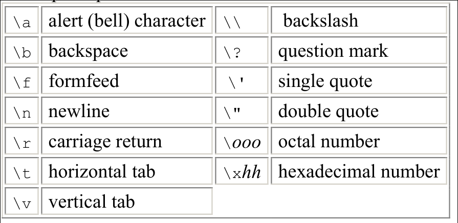

Une partie du tableau ASCII vu précédemment correspond aux caractères de contrôle.
Les deux caractères de contrôle à connaitre:
Pour spécifier certains caractères de contrôle on utilise des séquences d'échape. Ces caractères semble constituer deux mais en réalité en forment uniquement un.
Par exemple:
\n\r
On utilisera le \n pour aller à la ligne suivante ou le
\r pour revenir au début de la ligne dans des fonctions
type printf.
Note
Par exemple:
printf("Ces mots sont à la première ligne,\net celà sont sur la deuxième\n")L'opérateur sizeof permet de mesurer la taille de variables
int a = 2;
size_t taille_variable = sizeof a;
printf("Taille de la variable a: %zu octets (ou bytes)\n",
taille_variable);Mais aussi des types
size_t taille_type = sizeof(short);
printf("Taille du type 'short': %zu octets (ou bytes)\n", taille_type);La fonction printf vient de 'print-format'. C'est une
fonction qui permet non seulement d'imprimer des caractères sur un écran
mais aussi de formater des données. Pour choisir le format des données,
l'utilisateur de la fonction pourra spécifier celui-ci dans un
spécificateur précédé par le symbole '%'.
Note
Parmi ceux-là on trouve par exemple: 'd' pour les nombres entiers signés et 'u' pour les nombres entiers non signés (toujours positifs).
Important
D'autres paramètres peuvent être indiqués comme par exemple la
longueur. Ceux là permettent de compléter le spécificateur. Pour
formater correctement le type size_t on utilise le
z pour la longueur combiné avec u puisqu'une
taille de mémoire est toujours positive. Par exemple:
int foo = 2;
printf("Quantité de mémoire alouée par la variable 'foo': %zu\n",
sizeof foo);